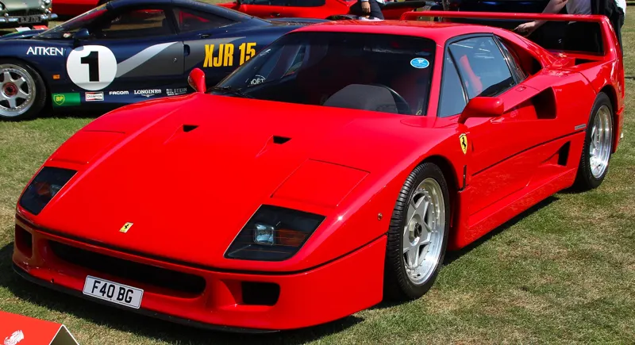
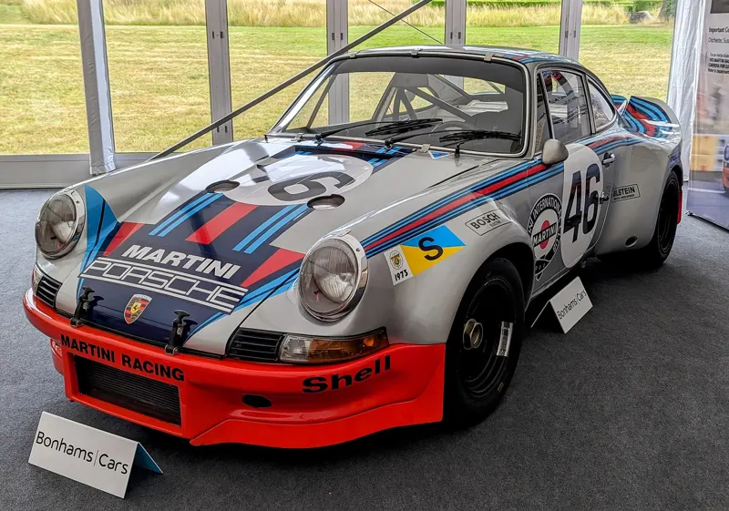

형태를 읽는 시간.
브랜드와 시대, 자동차의 형태를 따라 읽는 TOHEŞAR의 디자인 기록.
5편의 이야기

1987 / FERRARI · DESIGN HISTORY속도가 형태를 만들 때
F40 · 공기의 통로와 1980년대의 조형 ↗
사진: MrWalkr · CC BY-SA 4.0
1973 / PORSCHE · DESIGN HISTORY시간이 남긴 실루엣
911 Carrera RSR · 지붕선과 레이싱의 흔적 ↗
사진: Calreyn88 · CC0 1.0 ALFA ROMEO · DESIGN ESSAY
ALFA ROMEO · DESIGN ESSAY아름다움이 비율이 되는 순간
Giulia · 긴 보닛과 뒤로 물러난 캐빈 ↗
사진: Owen.outdoors · Pexels License · 원문 기사에 출처 표기 JAGUAR · DESIGN ESSAY
JAGUAR · DESIGN ESSAY새로운 시대는 어떤 형태로 오는가
Type 01 · 새로운 GT의 디자인 언어 ↗
사진: © Jaguar Land Rover Limited · 원문 기사에 출처·이용 조건 표기PORSCHE / VISION MODELMISSION S.TYPOGRAPHIC STUDY
2026 / PORSCHE · DESIGN다음 시대에도, 포르쉐는 포르쉐일까
Mission S · 비전 모델과 양산차의 거리 ↗
조건에 맞는 이야기가 없습니다. 검색어나 주제를 바꿔보세요.
자동차 디자인·역사 5편을 한곳에서 찾아볼 수 있습니다. 새 글은 발행 후 아카이브에 추가됩니다.
최신 자동차 뉴스 찾아보기 ↗